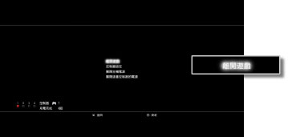

遊戲 > 遊玩PlayStation®2 / PlayStation®規格軟件 > 開始／離開遊戲
開始／離開遊戲
開始遊玩
插入光碟後，會自動啟動遊戲。
結束遊玩
於遊玩時，按下無線控制器的PS按鈕，再選擇畫面上顯示的［離開遊戲］。

重要
啟動／結束PlayStation®2 規格之軟件後，會自動解除控制器的指定編號。請依照以下步驟，指定控制器編號。
啟動遊戲時：顯示遊戲畫面後，按下控制器的PS按鈕。
結束遊戲時：顯示XMB™後，按下控制器的PS按鈕。
提示
若要保存PlayStation®2／PlayStation® 規格軟件的資料，需先新建內置記憶卡。內置記憶卡的詳細內容，請參閱 （遊戲）＞ ［遊玩PlayStation®2／PlayStation®規格軟件］ ＞［關於保存資料］。
（遊戲）＞ ［遊玩PlayStation®2／PlayStation®規格軟件］ ＞［關於保存資料］。
重置遊戲
於遊玩時，按下無線控制器的PS按鈕，再選擇畫面上顯示的［遊戲重置］。僅能於遊玩PlayStation®2／PlayStation®規格軟件操作的設定。
重要
- 部分PlayStation®2、PlayStation® 規格之軟件可能會於插入PS3™啟動時，出現與以往之PlayStation®2 或PlayStation® 主機不同的動作，或是無法正常啟動的現象。
- 此外，部份PS3™並不支援PlayStation®2規格光碟的播放。詳細請參閱[關於可播放的光碟種類]、各區域的官方網站或主機隨附的使用說明書。